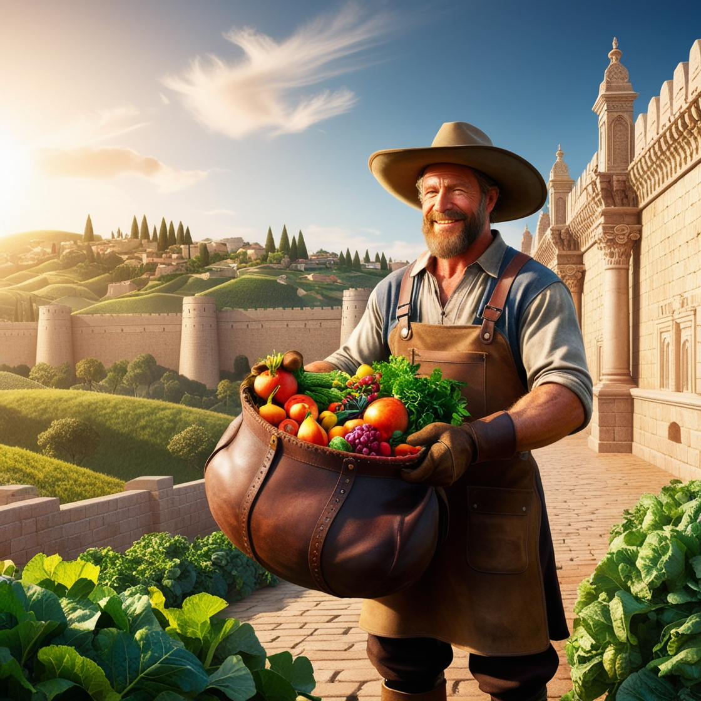
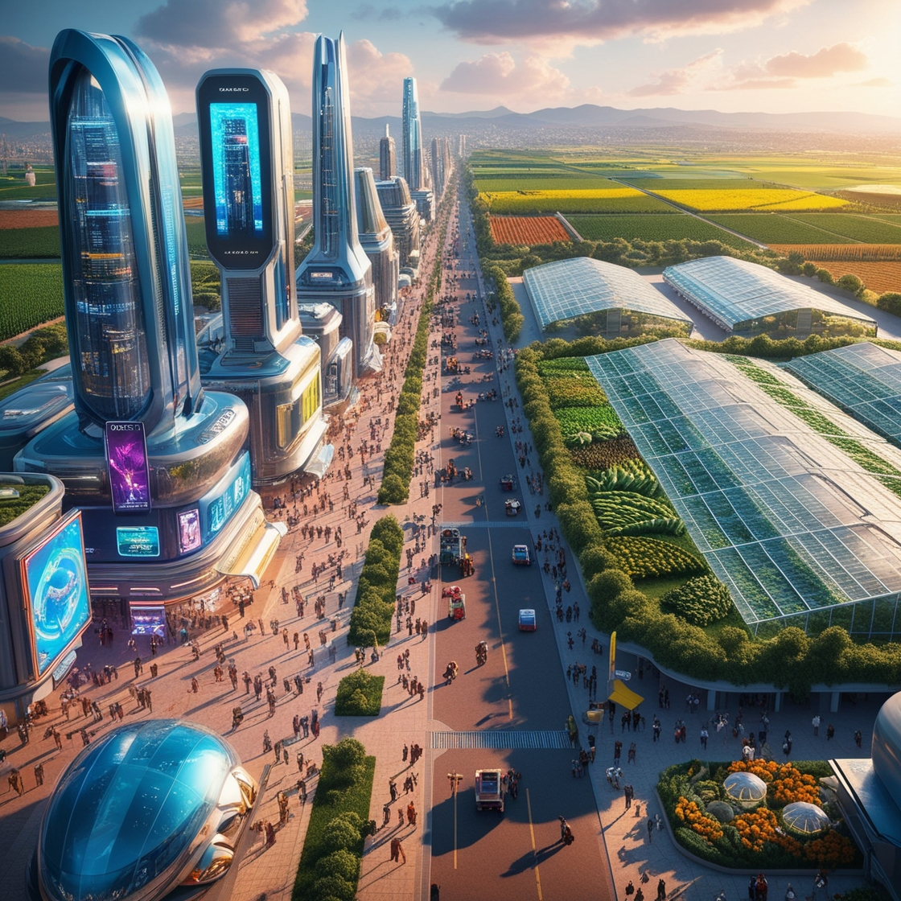
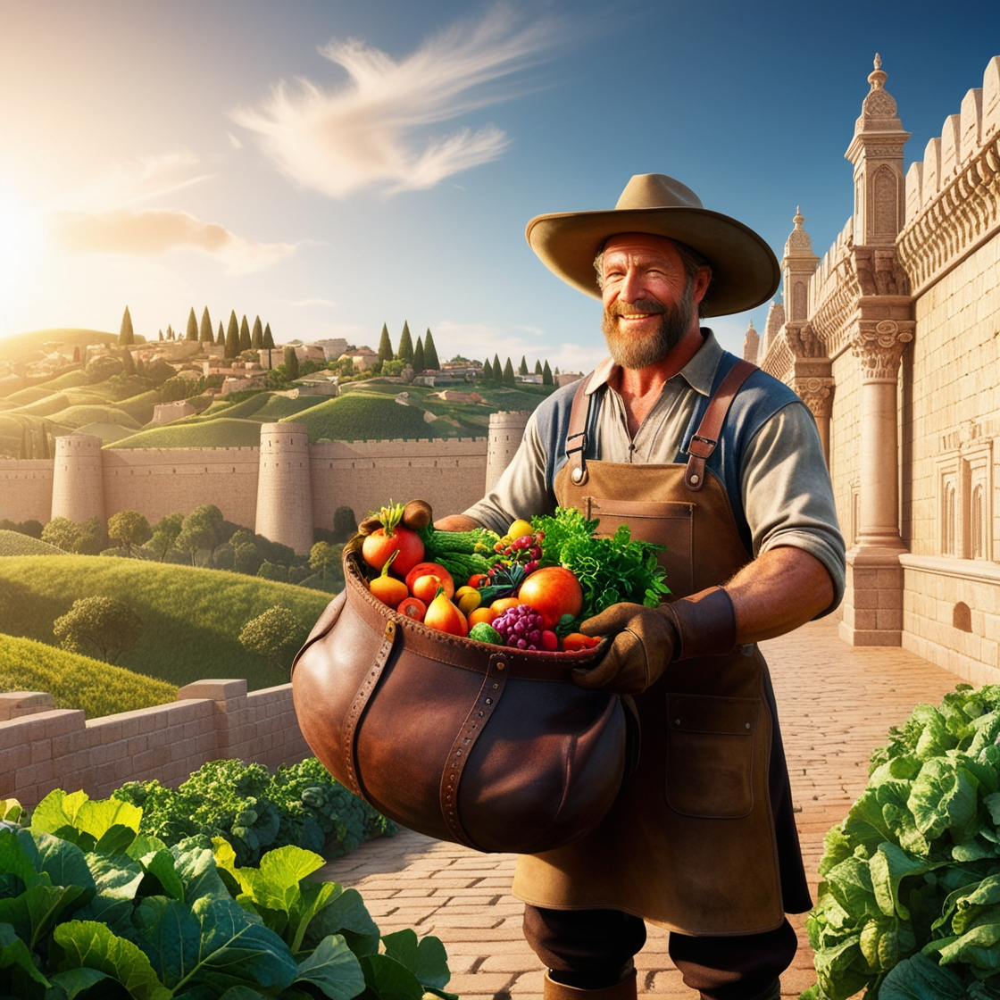
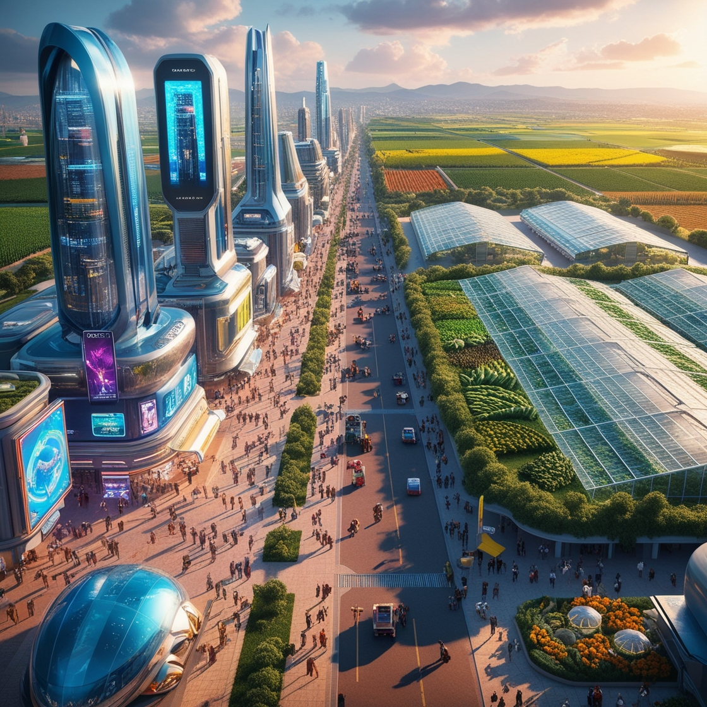

.jpg) 



O campo sob a cidade, muitas vezes invisível à consciência urbana, desempenha papéis cruciais na sustentabilidade ambiental, servindo como reservatório natural de água para regular lençóis freáticos e mitigar inundações. Além disso, oferece refúgio para uma diversidade surpreendente de vida selvagem, contribuindo para o bem-estar emocional dos habitantes urbanos. Com valor histórico e cultural significativo, revela vestígios do passado através da arqueologia urbana, enriquecendo nossa compreensão da história local. O campo subterrâneo também inspira inovação urbana, transformando espaços como túneis em novos usos sustentáveis, promovendo uma urbanização que integra a natureza. Reconhecer e preservar esses espaços é essencial para construir comunidades urbanas mais sustentáveis e culturalmente ricas, garantindo um equilíbrio harmonioso entre desenvolvimento urbano e conservação ambiental para as futuras gerações.
Um produtor agrícola desempenha um papel fundamental para uma cidade de várias maneiras: Segurança Alimentar: Os produtores agrícolas são responsáveis pela produção de alimentos essenciais, garantindo que as cidades tenham acesso a uma variedade de produtos frescos e nutritivos. Isso contribui para a saúde e o bem-estar da população. Economia Local: A agricultura pode ser uma parte significativa da economia local. Os produtores agrícolas geram empregos e podem contribuir para o desenvolvimento econômico por meio da venda de produtos, pagamento de impostos e participação em cadeias de suprimento locais. Desenvolvimento Sustentável: A agricultura sustentável pode ajudar a preservar o meio ambiente, conservar recursos naturais e manter a biodiversidade. Práticas agrícolas responsáveis podem contribuir para a saúde do solo e da água, beneficiando a cidade a longo prazo. Cultura e Tradição: Em muitas cidades, a agricultura está ligada à cultura local e às tradições. Feiras agrícolas, festivais e eventos comunitários frequentemente celebram a produção agrícola, fortalecendo a identidade cultural da cidade. Educação e Conscientização: Produtores agrícolas podem oferecer oportunidades educacionais sobre a origem dos alimentos, práticas agrícolas e sustentabilidade. Isso ajuda a aumentar a conscientização sobre a importância da agricultura e a conexão entre os consumidores e a produção de alimentos. Estímulo ao Comércio Local: A presença de mercados agrícolas e feiras pode estimular o comércio local e apoiar pequenos negócios. Além disso, produtos locais muitas vezes são preferidos por sua qualidade e frescor, fortalecendo a economia da cidade. Utilização de Territórios: Em muitas cidades, a agricultura pode contribuir para o uso eficiente do solo e ajudar a evitar a expansão desordenada. Áreas agrícolas próximas às cidades podem oferecer espaços verdes e ajudar a equilibrar o desenvolvimento urbano com a conservação ambiental.